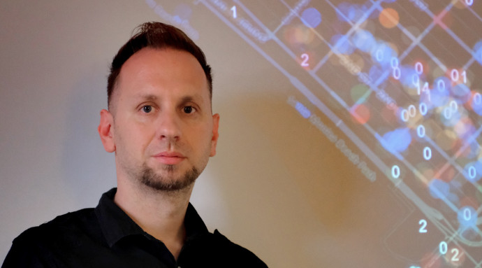

WARNING Quite a long post. Get yourself a cup of tea.
 While I’ve been a giscientist for a quarter of a century,1 I’ve only actually made it to four instances of its eponymous conference: Boulder 2002, Montréal 2016, Melbourne 2018, and now Christchurch 2025. For the Montréal and now Christchurch meetings I was on the program committee and therefore among the co-editors of the proceedings volume. And I have the beanie to prove it.2
While I’ve been a giscientist for a quarter of a century,1 I’ve only actually made it to four instances of its eponymous conference: Boulder 2002, Montréal 2016, Melbourne 2018, and now Christchurch 2025. For the Montréal and now Christchurch meetings I was on the program committee and therefore among the co-editors of the proceedings volume. And I have the beanie to prove it.2
Before the meeting
As a ‘remote-local’ organiser, I was involved in quite a few meetings over the last year or so as we assembled the conference program and made plans to welcome the world of giscience to Aotearoa. While I was closely involved in the paper and poster review process I can take very little credit for the success of the conference logistics, location, venue, A/V, refreshments, conference dinner, and so on. Credit for that must go solely to Vanessa da Silva Brum Bastos, Carolynne Hultquist, and most especially Ben Adams, the ‘local-local’ organisers, who did a spectacular job.
It’s never not a risk to bring an international meeting to New Zealand given the arduous travel involved in attending,3 and it is to the credit of the GIScience conference head honchos that they were willing to take a chance on us, and of the organising team that it was a success. It doesn’t do any harm that in population terms New Zealand is actually not the world’s most remote location. The fact of Aotearoa’s existence as a Asia-Pacific nation was abundantly clear with a preponderance of conference attendees from East Asia. A few brave souls made it all the way from Europe, a fair number from US universities (many of them PhD students supported by an NSF award secured by Song Gao), and there was a good local contingent from around New Zealand, and of course Australia.
One minor concern from a community perspective was that there seemed to be a distinctly bimodal distribution of seniorities: quite a few old-timers (among whom I must now consider myself), and a large number of graduate students (boosted by that NSF award) and early-career folks, but by casual observation, not so many mid-career researchers. Hopefully my anecdata is a poor reflection of the realities of the field, but I am a little concerned that a more robustly healthy community would have better representation across career stages.
Keynotes
Unlike GeoCart, which tends to keynote overload, GIScience 2025 featured the regulation one keynote per day, with interesting presentations from Michelle LaRue (penguins!), Matt Duckham (research with impact), and Krzysztof Janowicz (‘Jano’) (can we know what AI knows?).
Michelle made a compelling case for the impact of giscience—via remote sensed imagery—on her field, tracking penguin populations in Antarctica. In brief, before the advent of regular high resolution imagery we had no idea that there are so many emperor penguin colonies. We also had little idea of if or how colonies interact, or whether individuals migrate between colonies, and so on. Interesting stuff. The multiple scales at which penguins interact—competitively between colonies at up to continental scales, and collaboratively as colonies through winter, but competitively within colonies during nesting—provides great teachable material for thinking about spatial processes.4
Matt beamed in from Melbourne, continued in the impact vein, encouraging us to think differently about how our research is valued. We tend as academics to focus on citations, which is… well… I was going to say fine, but really it’s very not fine. Citations are gameable, very much ‘inside baseball’, and not evidence of real engagement with the work. On that last point in particular, it’s not a point that Matt made,5 but I can’t help but notice how often citations to my work miss the point completely.6 Almost as if the citing author hadn’t read beyond the abstract. So… I’m very much here for different ways to value our own work and that of others. Having said that, I didn’t come away from Matt’s talk with a clear sense of what alternative methods might be. Not all research is well-placed to be taken up by end-user communities. Part of Matt’s argument was that a lot of giscience is well-placed in that sense, which is good for us. But perhaps a more radical take would be that we should be dropping league tables and metrics and so on entirely.7 It’s not at all clear that we’d lose anything in the process, except perhaps excessive numbers of not very informative papers.
Jano spoke very entertainingly about his ongoing efforts to figure out WTAF8 LLMs ‘think’ about geography. Along the way he mentioned more or less in passing a fascinating map of the fictional land of Allestone made by a 5-year old Thomas Williams Malkin which I had not heard of before. Allestone previously appeared in the giscience literature in a paper by Mike Goodchild and Linna Li,9 where they measured the fractal dimension of the coastline of Allestone as one way to check how reliable geographic data might be.10 In the different context of evaluating the geographical musings of AI, Jano suggested that this might be one way (Zipf’s rank size law is another) that we as giscientists could improve the geographical knowledge of our AI overlords. Reporting on an entertaining early exchange with an LLM Jano noted the machine’s confusion about the notion of measuring the distance between neighbouring countries. Sure enough, as I write, DuckDuckGo’s ‘Search Assist’ informs me, in response to the question ‘how far apart are russia and ukraine?’ that,
The distance between Russia and Ukraine varies depending on the specific locations being measured, but the driving distance from Kyiv, Ukraine, to Moscow, Russia, is approximately 1,044 miles (1,680 kilometers). The shortest flight distance is about 471 miles (758 kilometers)
Not actually wrong but, yeah, nah, not really right either. The machines are coming for us, but they have a lot to learn from giscience, and giscientists may have a lot to gain from engaging with the development of more specifically geographical intelligence.
My big picture take away
A notable feature shared by all three keynotes (which might be a first for a GIScience conference) is that all three speakers were asked explicity political11 questions, concerning the politics of funding and the duty (or not) of scientists to take political and/or ethical positions.12
Towards the end of Computing Geographically13 I suggest that,
giscience […] should really “never again be quite the comfortable retreat for the technically minded” (Goodchild, 200614, p. 687), which it remains, in spite of the best efforts of critical GIS scholars. (p 254)
To disentangle that quote, Mike Goodchild reflecting on the impact of Ground Truth suggested that that book meant GISers had to properly engage with the social and political implications of their work, and that this was an irreversible change. As the quote suggests, I remain unconvinced. Exhibit A would have to be the dominance over time of GIScience meetings by the ‘technically minded’.
Now, to be clear, there’s nothing wrong with technical research. Technical research is absolutely necessary. Everything is political, but not everything we say about everything has to emphasise its political aspects. But to ignore its political aspects is itself political, and so, there is also nothing wrong with work that takes an avowedly political position in relation to the technical, or the purposes to which technical developments are put.
The sense that giscientists ‘get this’ seems to me to have been expressed in the questions to the conference keynotes, and also in the special sessions at the meeting, two of which directly focused on clearly political themes: privacy in the context of movement data, and geospatial work for sustainable cities and communities. But here’s the thing, some of the discussions on these topics are exactly the topics that our colleagues in geography departments have been researching for years, in subfields like critical GIS and digital geographies. We don’t have to approach themes like surveillance capitalism and privacy starting from scratch. There are literally hundreds of papers and books exploring these themes, and giscientists should be fully engaged with this more-than-technical geospatial stuff.
Overall, it seems to me like there’s been some progress towards giscientists recognising that what we do matters in the world and not only on a technical level. Certainly, the program committee in 2025 was much more comfortable with lightly policing the traditionally fraught boundary between ‘theoretical’ and ‘applied’ work15 than the program committee in 2016. This lighter touch would not have passed muster in 2016, and certainly not in 2000 when this whole thing got started.16
Of course, the applied vs. theoretical binary is not really the topic at hand. In Computing Geographically I argue at length that one way to take seriously the wider implications of our work would be for giscientists to engage with broader currents in geographical thought. I do this in a way that directs attention to some of those currents that seem to me the most promising for doing interesting technical work while also enhancing how diverse geographies are represented. It’s intended as an invitation for giscientists to really step away from the purely technical and fully engage with the messy (and yes, political) realities of what giscience / geospatial / GIS does in the world.17
Anyway, rant over.
Highlights
With three tracks, you can’t catch ’em all, so this is inevitably an incomplete perspective… In particular, I actively avoided sessions dominated by AI/ML methods, and for whatever reason, my personal highlights were improbably all packed in to the first day.
René Westerholt’s two presentations about spatial weights and how we should take them more seriously. I couldn’t agree more! We use spatial weights all the time in geographic analysis, and too often we gloss over where they came from or why we picked the weights we did. René and his team’s serious engagement with questions of how we choose spatial weights, and just as importantly how we understand and explain why we choose the weights we do, seems to me inarguable. I was particularly impressed with the detailed close reading of papers that they are working on in their literature review.
In the same vein I very much enjoyed the presentation by Simon Scheider and Judith Verstegen essentially making an argument about the limitations of spatial ‘prediction’ otherwise known as static spatial models when we want to understand cause and effect. Cause and effect are hopelessly entangled with one another in any spatial pattern. Our only hope of disentangling them is to explicitly represent the interacting processes and experiment with turning things on and off to see what happens. Inevitably, equifinality will not make this process foolproof, but it’s much more likely to help us understand how things got the way they are18 than statistical modelling, no matter how sophisticated.
Gus Ellerm’s paper (with Ben Adams and Mark Gahegan) on a framework for writing reproducible papers that update themselves as new data come in was a fascinating glimpse into how scientific results might get reported in years to come. Of course… speaking to Matt Duckham’s keynote on ‘impact’ it gave yet another reason to be wary of citations and counting papers as a measure of academic success. If I’m not mistaken, during the talk, Gus generated two new papers from the data!
Amazingly, for me, at least on day 1, the good stuff kept coming. In a session on ‘Historical and Societal Perspectives’, Rere-No-A-Rangi Pope presented on georeferencing historical maps at scale. This is work I have been involved with so I’m not really an unbiased observer and won’t say any more. The presentation was well placed, sharing a session with work on the Biowhere gazetteer and a fun presentation by Sidney Wong self-confessed ‘computational sociolinguist’ exploring linguistic differences in reddit posts for different countries and regions in New Zealand. A little hard to shake off the question of how reflective of language use in everyday life in the world in the places concerned (versus at the keyboard, and not in those places at all), but even so an interesting talk, well given.
The posters were great. The standard was uniformly high, and the engagement of attendees with the poster presenters was enthusiastic. It was all a bit crowded for me, but I was able to spend some ‘quiet time’ later in the week with some of the posters and was very impressed. Furthermore, overall, as a program committee, I think we made the right call on most of this work which was well suited to poster presentation, while the papers I saw presented were well suited to that mode too.
The session I chaired was a bit of a wreck, with one presenter stranded by visa issues, and another presenting by video due to illness. But this did include the second of René Westerholt’s presentations (discussed above). And it was an unexpected, if mildly embarrassing, highlight to have Lex Comber (the video presenter) open with, “Thank you David for that kind introduction”,19 and then to have him both asking and answering his own questions at the end of the presentation. But damnit! He overran the time, even on video.
Christchurch Town Hall where the conference dinner was held was magnificent (I had no idea), and Hagley Park, which I was able to walk through to and from the conference each day was a joy. It made me a little sad that for whatever reason conversations in 2023 about a possible position in the School of Earth and Environment at Canterbury eventually came to naught.
And finally: (i) someone at the conference dinner was excited to meet me because they enjoy the website; (ii) I was reminded that Qian Sun of RMIT took a class in Python programming with me way back in uh… 2005; and (iii) May Yuan did eventually make it to the meeting, although sadly not for very long.
Final thoughts
The conference chairs Ben Adams and Mark Gahegan made an impassioned plea20 at the start of the conference for people to engage fully with the presentations, to be present for the presentations as it were, and set phones, and laptops, and email aside. I guess it’s a while since I’ve been at a conference, but I think people paid attention and did engage. There were always good questions after every presentation. Renée Sieber deservedly won the newly instituted ‘best question’ of the conference (really, a lifetime achievement award), but the general level of engagement was high.21
Well done all!

Footnotes
Longer if you grant me membership when I gained my Masters in 1997↩︎
I also have a reusable coffee mug/glass, which like the beanie has the conference logo which I accidentally designed. The higher resolution, more boldly coloured version shows the tiled map aspect of the design, which unfortunately is less apparent in the merch.↩︎
Especially now in the wake of COVID-19 with so many universities cutting international travel often under the guise of carbon consciousness, but given the parlous state of university funding globally, I’m not convinced that’s the whole story…↩︎
Funny enough a picture of Adelie penguins is something I’ve used to talk about second order effects in spatial process for years.↩︎
He’s probably too nice a person for that.↩︎
Yes, yes, death of the author and all that, but alternative readings are one thing, and complete failures of reading are something else again.↩︎
See e.g., The University of Zurich’s recent parting ways with the Times Higher Education World University Ranking.↩︎
My term not Jano’s.↩︎
Goodchild MF and L Li. 2012. Assuring the quality of volunteered geographic information. Spatial Statistics 1 110–120. doi: 10.1016/j.spasta.2012.03.002.↩︎
This might have indirectly been the prompt to my recent post on fractal dimension.↩︎
Throughout this section by ‘political’ I mean ‘related to the exercise of power’ not party political.↩︎
And importantly, not all those questions were asked by Renée Sieber.↩︎
O’Sullivan D. 2024. Computing Geographically: Bridging Giscience and Geography. Guilford Press, New York.↩︎
Goodchild MF. 2006. GIScience ten years after Ground Truth. Transactions in GIS, 10(5), 687-692↩︎
This was an undercurrent in Matt’s keynote too: applied work is often more ‘impactful’ even if it doesn’t tick the ‘theoretical’ box for some.↩︎
Dare I say it, GIScience is becoming a bit more like GISRUK…and that’s OK. A bit more applied and a bit less theoretical, if not any more political.↩︎
So go read my book!↩︎
See O’Sullivan D. 2021. Things are how they are because of how they got that way: Thoughts from the beach, on 50 years of Geographical Analysis. Geographical Analysis 53(1) 157–163.↩︎
Pro-tip if you find yourself having to pre-record a talk, find out who is chairing and thank them for their introduction. It’s guaranteed to catch them off-guard.↩︎
Well… what passes for impassioned in so-laid-back-its-horizontal New Zealand.↩︎
Maybe that missing mid-career demographic are the problem!↩︎